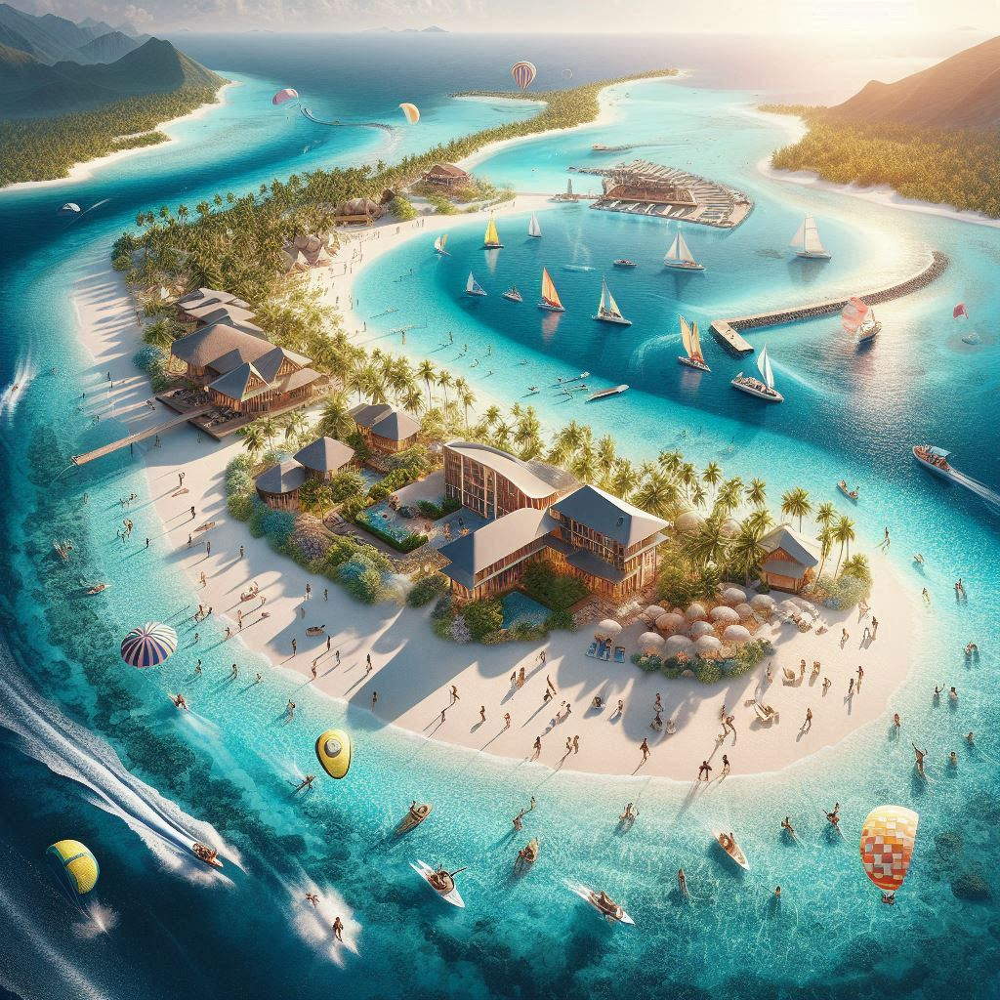
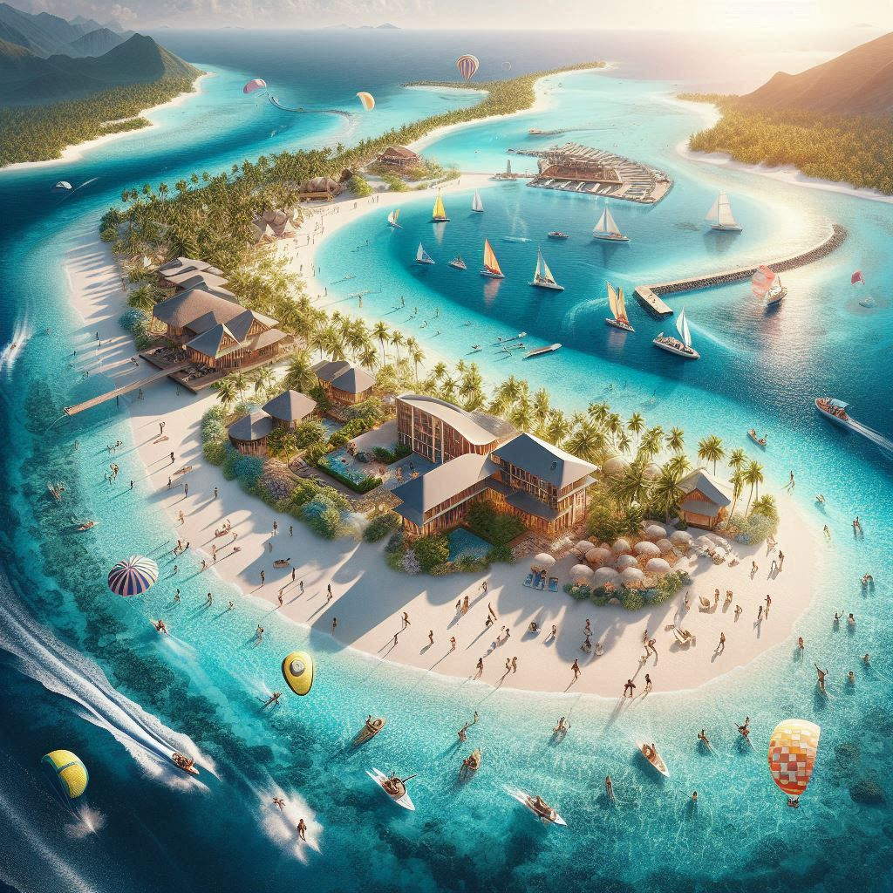

- 1. Kavaratti Island:
- Overview: Kavaratti is the administrative capital of Lakshadweep and one of the most visited islands. It is renowned for its beautiful lagoons, pristine beaches, and the Ujra Mosque, an important religious site. Visitors can enjoy water sports, like snorkeling and scuba diving, or relax on the secluded beaches. The Kavaratti Marine Aquarium and the Lighthouse also attract tourists with their serene views.
- 2. Agatti Island:
- Overview: Agatti Island is known for its breathtaking coral reefs and clear turquoise waters, making it a perfect spot for scuba diving and snorkeling. It has some of the best beaches in Lakshadweep, and visitors can explore the local culture, which is predominantly influenced by Islamic traditions. The island is also a gateway for tourists traveling to other parts of the archipelago.
- 3. Minicoy Island:
- Overview: Minicoy, the southernmost island of Lakshadweep, is famous for its Mahl culture and beautiful beaches. The island is known for its unique lighthouse, and its vast coral reefs make it ideal for diving and swimming. Minicoy has a distinct culture compared to other islands, with its own language, traditions, and festivals.
- 4. Bangaram Island:
- Overview: Bangaram is one of the most popular tourist destinations due to its silky sandy beaches, crystal-clear waters, and peaceful atmosphere. The island is perfect for water sports such as kayaking, snorkeling, and fishing. It's also an ideal place for relaxation, far from the hustle and bustle of city life.
- 5. Kadmat Island:
- Overview: Kadmat Island offers pristine beaches, water sports, and water-based activities like snorkeling and scuba diving. The island is less commercialized than others, making it perfect for those looking for a more tranquil and secluded experience. Visitors can explore the beautiful coral reefs that surround the island.
- 6. Kalapathar Island:
- Overview: Known for its serene beaches and clear blue waters, Kalapathar Island is an excellent destination for those seeking a laid-back and quiet vacation. The island is perfect for water sports and fishing enthusiasts. Its natural beauty, combined with the opportunity for wildlife spotting, makes it an ideal spot for nature lovers.
 

- 1. Water Sports: Lakshadweep is famous for its water sports activities, especially snorkeling, scuba diving, and kayaking. The coral reefs around the islands are teeming with vibrant marine life, making it a paradise for underwater exploration.
- 2. Fishing: The islands are a popular destination for both deep-sea fishing and traditional fishing. Tourists can try their hand at fishing, which is an integral part of the local economy and lifestyle.
- 3. Beach Relaxation: With miles of pristine, white sandy beaches and crystal-clear waters, the islands are ideal for relaxation. Visitors can spend their days lounging on the beach, sunbathing, and enjoying the peaceful surroundings.
- 4. Cultural Exploration: While the primary focus of tourism in Lakshadweep is its natural beauty, visitors can also explore the islands’ unique culture, which is a blend of Arabian, Indian, and local traditions. Religious sites such as the Ujra Mosque and the Minicoy Lighthouse provide insight into the region’s history and local lifestyle.
- By Air: Lakshadweep is accessible by air through Agatti Island, which has a small airport connected to Kochi in Kerala. Flights to Agatti are available from Kochi.
- By Sea: The islands can also be accessed by passenger ships from Kochi to various islands, including Kavaratti, Minicoy, and Kadmat.
The best time to visit Lakshadweep is during the winter months (from October to April), when the weather is pleasant, and the seas are calm, making it perfect for water activities.
6. Tourism Regulations:Since Lakshadweep is a protected area, tourism is regulated by the Lakshadweep Administration. Foreign tourists are required to obtain special permits to visit the islands, while Indian tourists do not need permits for most of the islands.
In conclusion, Lakshadweep is a unique and peaceful tropical paradise, attracting those seeking adventure, serenity, and a chance to immerse themselves in the beauty of coral reefs, untouched beaches, and a distinct island culture.